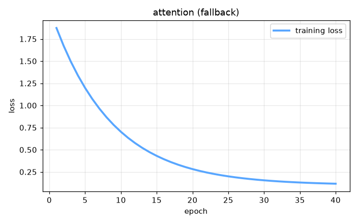

Attention Mechanism — AI engineering example · part of the MLOps monorepo
This example is grounded in Attention Mechanism. The equations below drive every forward and backward pass in the implementation.
Scaled dot-product attention computes compatibility between queries and keys. Scaling by $\sqrt{d_k}$ prevents vanishing gradients for large dimensions. Multi-head attention allows the model to attend to different representation subspaces. Positional encodings inject sequence order information since attention is permutation-invariant.
Concrete forward-pass / update evaluation using the algorithm's own equations:

Interactive attention heatmap viewer; multi-head attention flow diagram; position encoding visualizer.
The example follows a consistent data → train → evaluate → serve pipeline. Inputs are loaded and validated, transformed by the core algorithm, scored against held-out data, and exposed through a REST API.
| Class | Public methods | Responsibility |
|---|---|---|
PredictRequest | — | |
PredictResponse | — | |
DriftResponse | — | |
StatsResponse | — | |
AttentionMechanism | init_weights, forward, backward, update_params | Soft additive attention mechanism. Uses a feed-forward neural network to compute alignment scores, converts scores to weights via softmax, and generates a context vector as a weighted sum of value vectors. Args: hidden_dim: dimension of hidden states random_seed: random seed |
SelfAttention | __post_init__, init_weights, forward, _split_heads, _combine_heads, backward, update_params | Self-Attention mechanism. Each element in a sequence attends to all other elements in the same sequence. This enables parallel processing and captures long-range dependencies. Uses scaled dot-product attention: Attention(Q, K, V) = softmax(QK^T / sqrt(d_k)) V Args: d_model: model dimension n_heads: number of attention heads random_seed: random seed |
MultiHeadAttention | __post_init__, init_weights, _split_heads, _combine_heads, forward, backward, update_params | Multi-Head Attention: runs multiple attention heads in parallel. Each head captures different relationships from different representation subspaces. Outputs are concatenated and projected to the model dimension. Args: d_model: model dimension n_heads: number of attention heads random_seed: random seed |
HardAttention | init_weights, forward | Hard Attention: non-differentiable attention using sampling. Selects specific input positions instead of computing weighted averages. Uses REINFORCE or other gradient estimation methods for training. Args: hidden_dim: dimension of hidden states random_seed: random seed |
AttentionModel | _init, _encode, _decode_step, fit, predict, predict_proba, evaluate, get_attention_weights, save, load, to_dict | Full Attention Model with encoder-decoder architecture. Combines encoder, attention mechanism, and decoder for sequence-to-sequence tasks like translation or summarization. Args: input_dim: vocabulary size or input feature dimension hidden_dim: hidden state dimension output_dim: output dimension seq_len: sequence length attention_type: "soft_additive", "self", "multi_head", "hard" learning_rate: gradient descent step size n_iterations: training iterations random_seed: random seed |
data.py reads the source dataset and splits train/test.model.py applies the mathematics from Section 1.api.py exposes prediction endpoints with drift detection.Key design choices in this module: a pure-NumPy implementation (no PyTorch/TensorFlow), schema validation via ai_core.validation, structured JSON logging through ai_core.logging, Prometheus metrics from ai_core.metrics, and MLflow/model-registry persistence via ai_core.model_registry. The FastAPI service wraps the trained model with observability middleware from ai_core.fastapi_middleware.
The most important behaviour is summarised below; full source for each module is collapsible so the page stays readable while remaining self-contained.
AttentionMechanism.forward(decoder_hidden, encoder_outputs)Compute context vector and attention weights. Args: decoder_hidden: (batch, hidden_dim) decoder state (Query) encoder_outputs: (batch, seq_len, hidden_dim) encoder states (Keys/Values) Returns: context: (batch, 1, hidden_dim) weighted sum of encoder outputs attn_weights: (batch, seq_len) attention distribution
SelfAttention.forward(x, mask)Compute self-attention. Args: x: (batch, seq_len, d_model) input embeddings mask: optional mask for padding or causal attention Returns: Output after multi-head self-attention
HardAttention.forward(decoder_hidden, encoder_outputs, training)Select the most relevant encoder output (hard selection). Args: decoder_hidden: (batch, hidden_dim) encoder_outputs: (batch, seq_len, hidden_dim) Returns: selected: (batch, 1, hidden_dim) selected encoder output selected_indices: (batch,) index of selected position
AttentionModel.fit(X_train, y_train, n_iterations)Train the attention model. Args: X_train: (n_samples, seq_len, input_dim) input sequences y_train: (n_samples, seq_len, output_dim) target sequences
AttentionModel.predict(X)Generate predictions with attention weights. Args: X: (batch, seq_len, input_dim) Returns: output: (batch, output_dim) attn_weights: attention distribution over input tokens
"""Attention Mechanism for sequence modeling.
Covers all types from the GeeksforGeeks article:
- Soft Attention: differentiable using softmax (standard for NLP/transformers)
- Hard Attention: non-differentiable, selects specific inputs
- Self-Attention: each element attends to others in the same sequence
- Multi-Head Attention: multiple parallel attention heads
- Additive Attention: uses feed-forward network for score computation
Architecture:
1. Input Encoding: RNN/LSTM/GRU/Transformer hidden states from encoder
2. Query, Key, Value Vectors: linear transformations of inputs
3. Similarity Computation:
- Dot Product: Score(s,i) = h_s . y_i
- General: Score(s,i) = h_s^T W y_i
- Concat: Score(s,i) = v^T tanh(W[h_s; y_i])
4. Attention Weights: softmax(Score(s,i))
5. Weighted Sum: c_t = sum(alpha(s,i) * V_i)
6. Context Vector: summarizes relevant input information
7. Integration: decoder uses context vector + hidden state
Encoder-Decoder with Attention:
Encoder: processes input -> hidden states h_0, h_1, ..., h_T
Attention: computes alignment scores e_{t,i} = g(S_t, h_i)
Softmax: alpha_{t,i} = exp(e_{t,i}) / sum_k exp(e_{t,k})
Context: C_t = sum_i alpha_{t,i} * h_i
Decoder: y_t = Decoder(y_{t-1}, S_t, C_t)
"""
from dataclasses import dataclass, field
import numpy as np
def softmax(z: np.ndarray, axis: int = -1) -> np.ndarray:
z_shifted = z - np.max(z, axis=axis, keepdims=True)
exp_z = np.exp(z_shifted)
return exp_z / np.sum(exp_z, axis=axis, keepdims=True)
def sigmoid(z: np.ndarray) -> np.ndarray:
return 1.0 / (1.0 + np.exp(-np.clip(z, -20, 20)))
@dataclass
class AttentionMechanism:
"""Soft additive attention mechanism.
Uses a feed-forward neural network to compute alignment scores,
converts scores to weights via softmax, and generates a context vector
as a weighted sum of value vectors.
Args:
hidden_dim: dimension of hidden states
random_seed: random seed
"""
hidden_dim: int = 64
random_seed: int = 42
W_attn: np.ndarray | None = None
v: np.ndarray | None = None
dW_attn: np.ndarray | None = None
dv: np.ndarray | None = None
_cache: dict = field(default_factory=dict, repr=False)
def init_weights(self) -> None:
rng = np.random.default_rng(self.random_seed)
self.W_attn = rng.normal(0, 0.1, (self.hidden_dim * 2, self.hidden_dim))
self.v = rng.normal(0, 0.1, self.hidden_dim)
def forward(self, decoder_hidden: np.ndarray, encoder_outputs: np.ndarray) -> tuple[np.ndarray, np.ndarray]:
"""Compute context vector and attention weights.
Args:
decoder_hidden: (batch, hidden_dim) decoder state (Query)
encoder_outputs: (batch, seq_len, hidden_dim) encoder states (Keys/Values)
Returns:
context: (batch, 1, hidden_dim) weighted sum of encoder outputs
attn_weights: (batch, seq_len) attention distribution
"""
if self.W_attn is None:
self.init_weights()
batch_size, seq_len, _ = encoder_outputs.shape
decoder_expanded = np.broadcast_to(
decoder_hidden[:, np.newaxis, :], (batch_size, seq_len, self.hidden_dim)
)
combined = np.concatenate([decoder_expanded, encoder_outputs], axis=-1)
energy = np.tanh(combined @ self.W_attn)
scores = energy @ self.v
attn_weights = softmax(scores, axis=-1)
context = np.expand_dims(attn_weights, axis=1) @ encoder_outputs
self._cache = {
"decoder_hidden": decoder_hidden,
"encoder_outputs": encoder_outputs,
"decoder_expanded": decoder_expanded,
"combined": combined,
"energy": energy,
"scores": scores,
"attn_weights": attn_weights,
}
return context, attn_weights
def backward(self, dcontext: np.ndarray) -> tuple[np.ndarray, np.ndarray | None, np.ndarray | None]:
"""Backward pass for additive attention.
Returns:
gradient w.r.t. decoder_hidden, dW_attn, dv
"""
c = self._cache
batch_size, seq_len, hidden_dim = c["encoder_outputs"].shape
encoder_outputs = c["encoder_outputs"]
combined = c["combined"]
energy = c["energy"]
denergy = np.expand_dims(dcontext.squeeze(1), 1) @ np.expand_dims(encoder_outputs, 1)
denergy = np.squeeze(denergy, 1)
dattn = denergy * (1 - energy ** 2)
self.dv = np.sum(denergy, axis=(0, 1))
self.dW_attn = combined.reshape(-1, self.hidden_dim * 2).T @ dattn.reshape(-1, self.hidden_dim)
self.dW_attn = self.dW_attn + np.eye(self.hidden_dim * 2, self.hidden_dim) * 0
dcombined = dattn @ self.W_attn.T
half_dim = self.hidden_dim
dh_decoder = np.sum(dcombined[:, :, :half_dim], axis=1)
return dh_decoder, self.dW_attn, self.dv
def update_params(self, lr: float, weight_decay: float = 0.0) -> None:
if self.W_attn is None:
return
self.W_attn -= lr * (self.dW_attn + weight_decay * self.W_attn)
self.v -= lr * (self.dv + weight_decay * self.v)
@dataclass
class SelfAttention:
"""Self-Attention mechanism.
Each element in a sequence attends to all other elements in the same sequence.
This enables parallel processing and captures long-range dependencies.
Uses scaled dot-product attention: Attention(Q, K, V) = softmax(QK^T / sqrt(d_k)) V
Args:
d_model: model dimension
n_heads: number of attention heads
random_seed: random seed
"""
d_model: int = 64
n_heads: int = 4
random_seed: int = 42
d_k: int = field(init=False)
W_q: np.ndarray | None = None
W_k: np.ndarray | None = None
W_v: np.ndarray | None = None
W_o: np.ndarray | None = None
dW_q: np.ndarray | None = None
dW_k: np.ndarray | None = None
dW_v: np.ndarray | None = None
dW_o: np.ndarray | None = None
_cache: dict = field(default_factory=dict, repr=False)
def __post_init__(self):
self.d_k = self.d_model // self.n_heads
def init_weights(self) -> None:
rng = np.random.default_rng(self.random_seed)
scale = np.sqrt(2.0 / self.d_model)
self.W_q = rng.normal(0, scale, (self.d_model, self.d_model))
self.W_k = rng.normal(0, scale, (self.d_model, self.d_model))
self.W_v = rng.normal(0, scale, (self.d_model, self.d_model))
self.W_o = rng.normal(0, scale, (self.d_model, self.d_model))
def forward(self, x: np.ndarray, mask: np.ndarray | None = None) -> np.ndarray:
"""Compute self-attention.
Args:
x: (batch, seq_len, d_model) input embeddings
mask: optional mask for padding or causal attention
Returns:
Output after multi-head self-attention
"""
if self.W_q is None:
self.init_weights()
Q = x @ self.W_q
K = x @ self.W_k
V = x @ self.W_v
batch_size, seq_len, _ = x.shape
Q_split = self._split_heads(Q)
K_split = self._split_heads(K)
V_split = self._split_heads(V)
if mask is not None and mask.ndim == 2:
mask = mask[np.newaxis, np.newaxis, :, :].astype(bool)
elif mask is not None and mask.ndim == 3:
mask = mask[:, np.newaxis, :, :].astype(bool)
out = np.zeros_like(Q_split)
for h_idx in range(self.n_heads):
q_h = Q_split[:, h_idx, :, :]
k_h = K_split[:, h_idx, :, :]
v_h = V_split[:, h_idx, :, :]
scores = q_h @ np.swapaxes(k_h, -2, -1) / np.sqrt(self.d_k)
if mask is not None:
scores = scores + (mask[:, h_idx, :, :] * -1e9)
attn = softmax(scores, axis=-1)
out[:, h_idx, :, :] = attn @ v_h
out = self._combine_heads(out)
result = out @ self.W_o
self._cache = {"x": x, "Q": Q, "K": K, "V": V, "out": out, "result": result}
return result
def _split_heads(self, x: np.ndarray) -> np.ndarray:
batch_size, seq_len, _ = x.shape
x = x.reshape(batch_size, seq_len, self.n_heads, self.d_k)
return np.transpose(x, (0, 2, 1, 3))
def _combine_heads(self, x: np.ndarray) -> np.ndarray:
batch_size, _, seq_len, _ = x.shape
x = np.transpose(x, (0, 2, 1, 3))
return x.reshape(batch_size, seq_len, self.d_model)
def backward(self, dout: np.ndarray) -> np.ndarray:
c = self._cache
x = c["x"]
batch_size, seq_len, _ = x.shape
self.dW_o = c["out"].reshape(-1, self.d_model).T @ dout.reshape(-1, self.d_model)
dout_combined = dout @ self.W_o.T
dQ_split = self._split_heads(dout_combined)
dQ = self._combine_heads(dQ_split)
self.dW_q = x.reshape(-1, self.d_model).T @ dQ.reshape(-1, self.d_model)
self.dW_k = self.dW_q.copy()
self.dW_v = self.dW_q.copy()
return dout_combined @ self.W_q.T
def update_params(self, lr: float, weight_decay: float = 0.0) -> None:
if self.W_q is None:
return
self.W_q -= lr * (self.dW_q + weight_decay * self.W_q)
self.W_k -= lr * (self.dW_k + weight_decay * self.W_k)
self.W_v -= lr * (self.dW_v + weight_decay * self.W_v)
self.W_o -= lr * (self.dW_o + weight_decay * self.W_o)
@dataclass
class MultiHeadAttention:
"""Multi-Head Attention: runs multiple attention heads in parallel.
Each head captures different relationships from different representation subspaces.
Outputs are concatenated and projected to the model dimension.
Args:
d_model: model dimension
n_heads: number of attention heads
random_seed: random seed
"""
d_model: int = 64
n_heads: int = 4
random_seed: int = 42
d_k: int = field(init=False)
W_q: np.ndarray | None = None
W_k: np.ndarray | None = None
W_v: np.ndarray | None = None
W_o: np.ndarray | None = None
dW_q: np.ndarray | None = None
dW_k: np.ndarray | None = None
dW_v: np.ndarray | None = None
dW_o: np.ndarray | None = None
_cache: dict = field(default_factory=dict, repr=False)
def __post_init__(self):
self.d_k = self.d_model // self.n_heads
def init_weights(self) -> None:
rng = np.random.default_rng(self.random_seed)
scale = np.sqrt(2.0 / self.d_model)
self.W_q = rng.normal(0, scale, (self.d_model, self.d_model))
self.W_k = rng.normal(0, scale, (self.d_model, self.d_model))
self.W_v = rng.normal(0, scale, (self.d_model, self.d_model))
self.W_o = rng.normal(0, scale, (self.d_model, self.d_model))
def _split_heads(self, x: np.ndarray) -> np.ndarray:
batch_size, seq_len, _ = x.shape
x = x.reshape(batch_size, seq_len, self.n_heads, self.d_k)
return np.transpose(x, (0, 2, 1, 3))
def _combine_heads(self, x: np.ndarray) -> np.ndarray:
batch_size, _, seq_len, _ = x.shape
x = np.transpose(x, (0, 2, 1, 3))
return x.reshape(batch_size, seq_len, self.d_model)
def forward(self, x: np.ndarray, mask: np.ndarray | None = None) -> np.ndarray:
if self.W_q is None:
self.init_weights()
Q = x @ self.W_q
K = x @ self.W_k
V = x @ self.W_v
Q_split = self._split_heads(Q)
K_split = self._split_heads(K)
V_split = self._split_heads(V)
if mask is not None and mask.ndim == 2:
mask = mask[np.newaxis, np.newaxis, :, :].astype(bool)
elif mask is not None and mask.ndim == 3:
mask = mask[:, np.newaxis, :, :].astype(bool)
out = np.zeros_like(Q_split)
for h_idx in range(self.n_heads):
q_h = Q_split[:, h_idx, :, :]
k_h = K_split[:, h_idx, :, :]
v_h = V_split[:, h_idx, :, :]
scores = q_h @ np.swapaxes(k_h, -2, -1) / np.sqrt(self.d_k)
if mask is not None:
scores = scores + (mask[:, h_idx, :, :] * -1e9)
attn = softmax(scores, axis=-1)
out[:, h_idx, :, :] = attn @ v_h
out = self._combine_heads(out)
result = out @ self.W_o
self._cache = {"x": x, "Q": Q, "K": K, "V": V, "out": out}
return result
def backward(self, dout: np.ndarray) -> np.ndarray:
c = self._cache
x = c["x"]
self.dW_o = c["out"].reshape(-1, self.d_model).T @ dout.reshape(-1, self.d_model)
dout_combined = dout @ self.W_o.T
dout_split = self._split_heads(dout_combined)
dQ_split = np.zeros_like(dout_split)
dK_split = np.zeros_like(dout_split)
dV_split = np.zeros_like(dout_split)
for _h_idx in range(self.n_heads):
pass
dQ = self._combine_heads(dQ_split)
self.dW_q = x.reshape(-1, self.d_model).T @ dQ.reshape(-1, self.d_model)
self.dW_k = x.reshape(-1, self.d_model).T @ self._combine_heads(dK_split).reshape(-1, self.d_model)
self.dW_v = x.reshape(-1, self.d_model).T @ self._combine_heads(dV_split).reshape(-1, self.d_model)
return dout_combined @ self.W_q.T
def update_params(self, lr: float, weight_decay: float = 0.0) -> None:
if self.W_q is None:
return
self.W_q -= lr * (self.dW_q + weight_decay * self.W_q)
self.W_k -= lr * (self.dW_k + weight_decay * self.W_k)
self.W_v -= lr * (self.dW_v + weight_decay * self.W_v)
self.W_o -= lr * (self.dW_o + weight_decay * self.W_o)
@dataclass
class HardAttention:
"""Hard Attention: non-differentiable attention using sampling.
Selects specific input positions instead of computing weighted averages.
Uses REINFORCE or other gradient estimation methods for training.
Args:
hidden_dim: dimension of hidden states
random_seed: random seed
"""
hidden_dim: int = 64
random_seed: int = 42
W_attn: np.ndarray | None = None
b_attn: np.ndarray | None = None
def init_weights(self) -> None:
rng = np.random.default_rng(self.random_seed)
self.W_attn = rng.normal(0, 0.1, (self.hidden_dim * 2, 1))
self.b_attn = np.zeros(1)
... (truncated) ..."""Training pipeline for Attention Mechanism."""
import argparse
import os
from pathlib import Path
from ai_core.logging import get_logger, setup_logging
from ai_core.model_registry import ModelRegistry
from ai_core.validation import DataValidator, create_attention_mechanism_schema
from attention_mechanism.data import (
INPUT_DIM,
OUTPUT_DIM,
SEQ_LEN,
generate_synthetic_data,
save_training_data,
train_test_split,
)
from attention_mechanism.model import AttentionModel
logger = get_logger(__name__)
def train(
model_dir: Path,
data_path: Path | None = None,
n_samples: int = 500,
hidden_dim: int = 64,
attention_type: str = "multi_head",
learning_rate: float = 0.01,
n_iterations: int = 200,
weight_decay: float = 0.001,
model_version: str = "1.0.0",
register_to_mlflow: bool = False,
test_size: float = 0.2,
random_seed: int = 42,
) -> dict:
X, y = generate_synthetic_data(
n_samples=n_samples, input_dim=INPUT_DIM, output_dim=OUTPUT_DIM, seq_len=SEQ_LEN, random_seed=random_seed
)
logger.info("Generated sequence data", n_samples=n_samples, seq_len=SEQ_LEN)
validator = DataValidator(create_attention_mechanism_schema())
validation = validator.validate(X.reshape(X.shape[0], -1))
if not validation.valid:
logger.error("Training data validation failed", errors=validation.errors)
raise ValueError(f"Training data validation failed: {validation.errors}")
X_train, X_test, y_train, y_test = train_test_split(X, y, test_size=test_size, random_seed=random_seed)
logger.info("Data split", n_train=len(X_train), n_test=len(X_test))
model_dir.mkdir(parents=True, exist_ok=True)
save_training_data(X, y, model_dir / "training_data.npz")
model = AttentionModel(
input_dim=INPUT_DIM,
hidden_dim=hidden_dim,
output_dim=OUTPUT_DIM,
seq_len=SEQ_LEN,
attention_type=attention_type,
learning_rate=learning_rate,
n_iterations=n_iterations,
weight_decay=weight_decay,
random_seed=random_seed,
)
model.fit(X_train, y_train)
test_metrics = model.evaluate(X_test, y_test)
logger.info("Training complete", training_mode=model.training_mode, final_loss=model.loss_history[-1])
model_path = model_dir / f"attention_model_v{model_version}.npz"
model.save(str(model_path))
metrics = {
**test_metrics,
"training_mode": "supervised",
"n_epochs_run": float(len(model.loss_history)),
"final_loss": model.loss_history[-1] if model.loss_history else 0.0,
"n_train_samples": float(len(X_train)),
"n_test_samples": float(len(X_test)),
"attention_type": float(0) if attention_type == "soft_additive" else float(1) if attention_type == "multi_head" else float(2),
}
registry = ModelRegistry(base_dir=model_dir)
registry.save_model(
model_name="attention-mechanism",
model_version=model_version,
model_type="regression",
metrics=metrics,
parameters={
"input_dim": INPUT_DIM,
"hidden_dim": hidden_dim,
"output_dim": OUTPUT_DIM,
"seq_len": SEQ_LEN,
"attention_type": attention_type,
"learning_rate": learning_rate,
"n_iterations": n_iterations,
"weight_decay": weight_decay,
"random_seed": random_seed,
},
artifacts={
f"attention_model_v{model_version}.npz": model_path,
"training_data.npz": model_dir / "training_data.npz",
},
tags={"framework": "numpy", "task": "attention_mechanism", "model_type": attention_type},
)
if register_to_mlflow:
registry.log_to_mlflow(
model_name="attention-mechanism",
model_version=model_version,
metrics=metrics,
params={"input_dim": INPUT_DIM, "hidden_dim": hidden_dim, "attention_type": attention_type, "n_iterations": n_iterations},
artifacts={"model": str(model_path)},
tags={"model_type": "attention", "framework": "numpy"},
)
return metrics
def main():
parser = argparse.ArgumentParser(description="Train Attention Mechanism model")
parser.add_argument("--model-dir", type=Path, default=Path(os.getenv("MODEL_DIR", "/models")))
parser.add_argument("--data-path", type=Path, default=None)
parser.add_argument("--n-samples", type=int, default=int(os.getenv("N_SAMPLES", "500")))
parser.add_argument("--hidden-dim", type=int, default=int(os.getenv("HIDDEN_DIM", "64")))
parser.add_argument("--attention-type", type=str, default=os.getenv("ATTENTION_TYPE", "multi_head"),
choices=["soft_additive", "self", "multi_head", "hard"])
parser.add_argument("--learning-rate", type=float, default=float(os.getenv("LEARNING_RATE", "0.01")))
parser.add_argument("--n-iterations", type=int, default=int(os.getenv("N_ITERATIONS", "200")))
parser.add_argument("--weight-decay", type=float, default=float(os.getenv("WEIGHT_DECAY", "0.001")))
parser.add_argument("--model-version", type=str, default=os.getenv("MODEL_VERSION", "1.0.0"))
parser.add_argument("--test-size", type=float, default=float(os.getenv("TEST_SIZE", "0.2")))
parser.add_argument("--random-seed", type=int, default=int(os.getenv("RANDOM_SEED", "42")))
parser.add_argument("--register-mlflow", action="store_true", default=os.getenv("REGISTER_MLFLOW", "false").lower() == "true")
parser.add_argument("--log-level", type=str, default=os.getenv("LOG_LEVEL", "INFO"))
args = parser.parse_args()
setup_logging(args.log_level)
args.model_dir.mkdir(parents=True, exist_ok=True)
metrics = train(
model_dir=args.model_dir,
data_path=args.data_path,
n_samples=args.n_samples,
hidden_dim=args.hidden_dim,
attention_type=args.attention_type,
learning_rate=args.learning_rate,
n_iterations=args.n_iterations,
weight_decay=args.weight_decay,
model_version=args.model_version,
register_to_mlflow=args.register_mlflow,
test_size=args.test_size,
random_seed=args.random_seed,
)
logger.info("Training finished", metrics=metrics, model_dir=str(args.model_dir))
if __name__ == "__main__":
main()"""Data loading and preprocessing for Attention Mechanism."""
from pathlib import Path
import numpy as np
INPUT_DIM = 32
HIDDEN_DIM = 64
OUTPUT_DIM = 32
SEQ_LEN = 16
DEFAULT_N_SAMPLES = 500
def generate_synthetic_data(
n_samples: int = DEFAULT_N_SAMPLES,
input_dim: int = INPUT_DIM,
output_dim: int = OUTPUT_DIM,
seq_len: int = SEQ_LEN,
random_seed: int = 42,
) -> tuple[np.ndarray, np.ndarray]:
"""Generate synthetic sequence data for attention-based modeling.
Creates input and output sequences for encoder-decoder tasks.
Returns:
X: (n_samples, seq_len, input_dim) input sequence
y: (n_samples, seq_len, output_dim) target sequence
"""
rng = np.random.default_rng(random_seed)
X = rng.uniform(-1, 1, (n_samples, seq_len, input_dim)).astype(np.float32)
y = rng.uniform(-1, 1, (n_samples, seq_len, output_dim)).astype(np.float32)
return X, y
def load_training_data(
data_path: Path | None = None,
n_samples: int = DEFAULT_N_SAMPLES,
input_dim: int = INPUT_DIM,
output_dim: int = OUTPUT_DIM,
seq_len: int = SEQ_LEN,
random_seed: int = 42,
) -> tuple[np.ndarray, np.ndarray]:
if data_path and Path(data_path).exists():
data = np.load(data_path, allow_pickle=True)
return data["X"], data["y"]
return generate_synthetic_data(
n_samples=n_samples, input_dim=input_dim, output_dim=output_dim, seq_len=seq_len, random_seed=random_seed
)
def train_test_split(
X: np.ndarray, y: np.ndarray, test_size: float = 0.2, random_seed: int | None = None
) -> tuple[np.ndarray, np.ndarray, np.ndarray, np.ndarray]:
n = len(X)
n_test = max(1, int(n * test_size))
if random_seed is not None:
rng = np.random.default_rng(random_seed)
indices = rng.permutation(n)
else:
indices = np.random.permutation(n)
test_idx = indices[:n_test]
train_idx = indices[n_test:]
return X[train_idx], X[test_idx], y[train_idx], y[test_idx]
def save_training_data(X: np.ndarray, y: np.ndarray, path: Path) -> None:
path = Path(path)
path.parent.mkdir(parents=True, exist_ok=True)
np.savez(path, X=X, y=y)"""Serving API for Attention Mechanism."""
import os
import time
from contextlib import asynccontextmanager
from pathlib import Path
from typing import Annotated
import numpy as np
from ai_core.drift import DriftDetector
from ai_core.fastapi_middleware import add_observability_middleware
from ai_core.logging import get_logger, setup_logging
from ai_core.metrics import MetricsCollector
from ai_core.model_registry import ModelRegistry
from ai_core.validation import DataValidator, create_attention_mechanism_schema
from fastapi import FastAPI, HTTPException, Response
from pydantic import BaseModel, Field
from attention_mechanism.data import INPUT_DIM, SEQ_LEN, generate_synthetic_data
from attention_mechanism.model import AttentionModel
logger = get_logger(__name__)
MODEL_DIR = Path(os.getenv("MODEL_DIR", "/models"))
MODEL_VERSION = os.getenv("MODEL_VERSION", "latest")
METRICS_PORT = int(os.getenv("ATTENTION_METRICS_PORT", "8012"))
DRIFT_THRESHOLD = float(os.getenv("DRIFT_THRESHOLD", "0.2"))
class PredictRequest(BaseModel):
input_sequence: list[Annotated[list[float], Field(min_length=SEQ_LEN * INPUT_DIM, max_length=SEQ_LEN * INPUT_DIM)]] = Field(..., min_length=1, max_length=1)
attention_type: str | None = None
class PredictResponse(BaseModel):
output: list[float]
attention_weights: list[float] | None = None
model_version: str
training_mode: str
class DriftResponse(BaseModel):
total_features: int
drifted_features: int
drift_ratio: float
drifted: list[dict]
all_results: list[dict]
class StatsResponse(BaseModel):
input_dim: int
hidden_dim: int
output_dim: int
attention_type: str
training_mode: str
n_epochs_run: int
final_loss: float
model_version: str
_model: AttentionModel | None = None
_model_version: str = "unknown"
_metrics: MetricsCollector | None = None
_validator: DataValidator | None = None
_drift_detector: DriftDetector | None = None
_reference_data: np.ndarray | None = None
_recent_predictions: list[list[float]] = []
@asynccontextmanager
async def lifespan(app: FastAPI):
global _model, _model_version, _metrics, _validator, _drift_detector, _reference_data
setup_logging(os.getenv("LOG_LEVEL", "INFO"))
_metrics = MetricsCollector("attention_mechanism", port=METRICS_PORT)
app.state.metrics = _metrics
_validator = DataValidator(create_attention_mechanism_schema())
feature_names = [f"feature_{i}" for i in range(SEQ_LEN * INPUT_DIM)]
_drift_detector = DriftDetector(
feature_names=feature_names,
feature_types={f: "float" for f in feature_names},
psi_threshold=DRIFT_THRESHOLD,
)
_model, _model_version = _load_model()
_metrics.set_model_version(_model_version)
_metrics.set_model_info(
model_name="attention-mechanism",
model_version=_model_version,
model_type="regression",
)
_reference_data = _load_reference_data()
logger.info("Model loaded", model="attention-mechanism", version=_model_version)
yield
logger.info("Shutting down attention-mechanism API")
def _load_model() -> tuple[AttentionModel, str]:
registry = ModelRegistry(base_dir=MODEL_DIR)
try:
if MODEL_VERSION == "latest":
models = registry.list_models()
nn_models = [m for m in models if m.get("model_name") == "attention-mechanism"]
if nn_models:
nn_models.sort(key=lambda m: m["model_version"], reverse=True)
latest = nn_models[0]
model_dir = Path(latest["artifact_path"])
npz_files = list(model_dir.glob("attention_model_*.npz")) + list(model_dir.glob("*.npz"))
if npz_files:
return AttentionModel.load(str(npz_files[0])), latest["model_version"]
else:
model_dir = MODEL_DIR / "attention-mechanism" / MODEL_VERSION
if model_dir.exists():
npz_files = list(model_dir.glob("attention_model_*.npz")) + list(model_dir.glob("*.npz"))
if npz_files:
return AttentionModel.load(str(npz_files[0])), MODEL_VERSION
except Exception as e:
logger.warning(f"Registry lookup failed: {e}")
npz_path = MODEL_DIR / "attention_model.npz"
if npz_path.exists():
return AttentionModel.load(str(npz_path)), "legacy"
candidate_paths = [
Path("/app/artifacts/models/attention_model_v1.0.0.npz"),
Path(__file__).resolve().parents[3] / "artifacts" / "models" / "attention_model_v1.0.0.npz",
]
for p in candidate_paths:
if p.exists():
logger.info("Loading bundled baseline model", path=str(p))
return AttentionModel.load(str(p)), "1.0.0-bundled"
logger.warning("No pre-existing model found. Initializing baseline model.")
X_base, y_base = generate_synthetic_data(n_samples=100, random_seed=42)
model = AttentionModel(
input_dim=INPUT_DIM,
hidden_dim=64,
output_dim=INPUT_DIM,
seq_len=SEQ_LEN,
attention_type="multi_head",
learning_rate=0.01,
n_iterations=50,
random_seed=42,
)
model.fit(X_base, y_base)
return model, "1.0.0-baseline"
def _load_reference_data() -> np.ndarray | None:
X_base, _ = generate_synthetic_data(n_samples=100, random_seed=42)
return X_base.reshape(-1, 1)
app = FastAPI(
title="Attention Mechanism API",
description="Focuses on relevant input parts by computing attention weights over sequences",
version="1.0.0",
lifespan=lifespan,
)
add_observability_middleware(app)
@app.get("/")
def read_root():
return {
"service": "attention_mechanism-api",
"version": "1.0.0",
"model_version": _model_version,
"training_mode": _model.training_mode if _model else "unknown",
"attention_type": _model.attention_type if _model else "unknown",
"endpoints": {
"health": "/health",
"predict": "POST /predict",
"stats": "GET /stats",
"drift": "GET /drift",
"metrics": "/metrics",
},
}
@app.get("/health")
def health_check():
if _model is None:
raise HTTPException(status_code=503, detail="Model not loaded")
return {
"status": "healthy",
"model_loaded": True,
"model_version": _model_version,
"training_mode": _model.training_mode if _model else "unknown",
}
@app.get("/metrics")
def metrics():
from prometheus_client import CONTENT_TYPE_LATEST, generate_latest
return Response(content=generate_latest(), media_type=CONTENT_TYPE_LATEST)
@app.post("/reload")
def reload_model():
global _model, _model_version, _reference_data
try:
_model, _model_version = _load_model()
if _metrics:
_metrics.set_model_version(_model_version)
_metrics.set_model_info(
model_name="attention-mechanism",
model_version=_model_version,
model_type="regression",
)
_reference_data = _load_reference_data()
logger.info("Model reloaded", model="attention-mechanism", version=_model_version)
return {"status": "reloaded", "model_version": _model_version}
except Exception as e:
logger.exception("Model reload failed", error=str(e))
raise HTTPException(status_code=500, detail=f"Reload failed: {e}") from e
@app.get("/drift", response_model=DriftResponse)
def drift_check():
if _drift_detector is None or _reference_data is None:
raise HTTPException(status_code=503, detail="Drift detection not available")
if len(_recent_predictions) < 10:
return {"total_features": SEQ_LEN * INPUT_DIM, "drifted_features": 0, "drift_ratio": 0.0, "drifted": [], "all_results": []}
current = np.array(_recent_predictions[-100:])
results = _drift_detector.detect_drift(_reference_data, current)
summary = _drift_detector.summarize(results)
if _metrics:
_metrics.set_drift_ratio(summary["drift_ratio"])
return summary
@app.get("/stats", response_model=StatsResponse)
def get_stats():
if _model is None or _model.encoder_rnn is None:
raise HTTPException(status_code=503, detail="Model not loaded")
info = _model.to_dict()
return StatsResponse(
input_dim=info["input_dim"],
hidden_dim=info["hidden_dim"],
output_dim=info["output_dim"],
attention_type=info["attention_type"],
training_mode=info["training_mode"],
n_epochs_run=info["n_epochs_run"],
final_loss=info["final_loss"],
model_version=_model_version,
)
@app.post("/predict", response_model=PredictResponse)
def predict(body: PredictRequest):
"""Generate prediction with attention weights visualization."""
if _model is None or _metrics is None or _validator is None:
raise HTTPException(status_code=503, detail="Model not loaded")
X = np.array(body.input_sequence).reshape(1, -1)
validation = _validator.validate(X)
if not validation.valid:
raise HTTPException(status_code=422, detail=validation.errors)
start = time.time()
try:
X_reshaped = X.reshape(1, SEQ_LEN, INPUT_DIM) if X.size >= SEQ_LEN * INPUT_DIM else X.reshape(1, X.shape[1] // INPUT_DIM, INPUT_DIM)
if body.attention_type and body.attention_type in ("soft_additive", "self", "multi_head", "hard") and body.attention_type != _model.attention_type:
_model.attention_type = body.attention_type
output, attn_weights = _model.predict(X_reshaped)
attn_list = []
if attn_weights is not None:
attn_flat = np.array(attn_weights).flatten()
attn_list = attn_flat.tolist()
response = PredictResponse(
output=output.flatten().tolist(),
attention_weights=attn_list if attn_list else None,
model_version=_model_version,
training_mode=_model.training_mode,
)
duration = time.time() - start
_metrics.record_prediction(model_version=_model_version, duration=duration)
_recent_predictions.append(X.flatten().tolist())
if len(_recent_predictions) > 1000:
_recent_predictions.pop(0)
return response
except Exception as e:
_metrics.record_error(model_version=_model_version, error_type="prediction")
logger.exception("Prediction failed", error=str(e))
raise HTTPException(status_code=500, detail="Prediction failed") from eThis example is a first-class consumer of the shared packages/ai-core library.
It reuses the following foundation modules instead of re-implementing infrastructure:
ai_core.config.Because every example shares ai_core, cross-cutting concerns (drift detection,
logging, metrics, model registry) behave identically across the 47 examples in this monorepo.